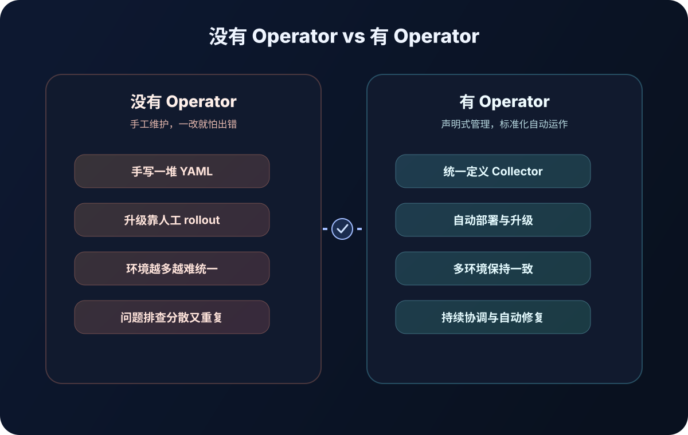
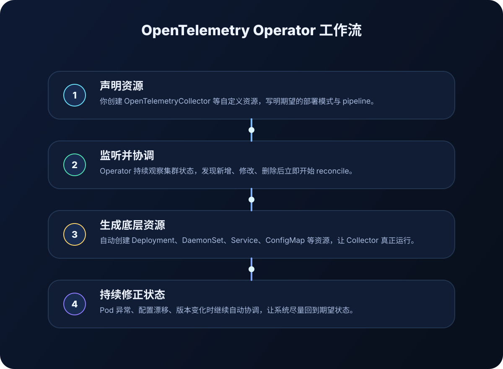

🧠
它不是“采集器”本身
真正负责接收 traces、metrics、logs 的通常是 OpenTelemetry Collector。Operator 更像“大脑”和“管家”，负责把这些采集器按规则创建出来并保持正确状态。
如果把 OpenTelemetry Collector 比作“遥测数据收集员”，那么 OpenTelemetry Operator 就像“自动招人、排班、发装备、持续巡检的主管”。它把原本繁琐的 Kubernetes 部署与维护，变成更标准化、更稳定的日常操作。
把 Collector 的部署、升级、注入、维护统一自动化。
多服务、多环境、多人协作的 Kubernetes 平台。
减少重复 YAML，降低变更风险，提高一致性。
你声明目标，Operator 负责把目标变成现实。
一句话：它是运行在 Kubernetes 中的控制器，专门帮助你自动部署和管理 OpenTelemetry 相关组件，尤其是 Collector 以及自动注入探针能力。
真正负责接收 traces、metrics、logs 的通常是 OpenTelemetry Collector。Operator 更像“大脑”和“管家”，负责把这些采集器按规则创建出来并保持正确状态。
你只需要声明“我想要一个 Collector”，Operator 就会在后台替你创建 Deployment、DaemonSet、Service 等 Kubernetes 资源，而不是让你手写一大堆 YAML。
所谓 Operator，本质上就是 Kubernetes 里的“高级运维程序”：持续观察集群状态，发现偏差后自动纠正，让系统始终接近你声明的目标状态。
在云原生世界里，大家追求的是声明式、可重复、可扩展、平台化。OpenTelemetry Operator 恰好把“观测接入”这件事，也带进了这条标准路径。
因为观测系统一旦进入生产环境，最大的痛点通常不是“会不会写配置”，而是“能不能持续、稳定、规模化地管理这些配置”。

从思路上看，非常像“你下目标，我来执行”。下面这 4 步基本概括了 OpenTelemetry Operator 的工作方式。
例如创建一个 OpenTelemetryCollector 自定义资源，告诉集群：我想要怎样的 Collector、跑几个副本、暴露哪些端口、使用什么 pipeline。
它会持续观察这些自定义资源，一旦发现新增、修改或删除，就开始执行相应动作。
它会替你生成 Kubernetes 原生资源，比如 Deployment、DaemonSet、Service、ConfigMap，确保 Collector 真正跑起来。
如果 Pod 挂了、配置变了、版本升级了，Operator 会继续协调，尽量让真实运行状态回到你声明的理想状态。

如果你只是本地单机实验，它不一定是第一选择；但一旦进入 Kubernetes、多服务、多人协作的环境，它的价值会迅速放大。
服务数量多、发布频繁、环境复杂，最需要统一的观测接入方式。Operator 能让每个团队都站在同一套标准上。
当你希望平台层统一提供观测能力，而不是每个业务团队各自摸索时，Operator 是非常有效的标准化抓手。
今天只有链路追踪，明天要加指标，后天要按命名空间拆分数据管道——Operator 能让这种演进过程更可控。
如果你已经有 Kubernetes 集群，最常见的做法是先安装 cert-manager，再安装 OpenTelemetry Operator。下面给你一个便于理解的最小示意。
# 1) 安装 cert-manager（Operator 常见依赖）
kubectl apply -f https://github.com/cert-manager/cert-manager/releases/latest/download/cert-manager.yaml
# 2) 安装 OpenTelemetry Operator
kubectl apply -f https://github.com/open-telemetry/opentelemetry-operator/releases/latest/download/opentelemetry-operator.yaml
# 3) 确认 Operator 已经运行
kubectl get pods -n opentelemetry-operator-system
# 4) 查看可用 CRD
kubectl get crd | grep opentelemetry下面这段 YAML 不求覆盖所有细节，但足够帮助第一次接触的人理解：你真正写给 Operator 的，不是 Deployment，而是更高层的意图。
apiVersion: opentelemetry.io/v1beta1
kind: OpenTelemetryCollector
metadata:
name: demo-collector
spec:
mode: deployment
replicas: 2
config:
receivers:
otlp:
protocols:
grpc: {}
http: {}
processors:
batch: {}
exporters:
debug: {}
service:
pipelines:
traces:
receivers: [otlp]
processors: [batch]
exporters: [debug]mode 决定部署形态，config 决定 Collector 内部 pipeline。你写的是“目标配置”，Operator 负责把它落到 Kubernetes 资源上。receivers → 从哪里接收数据
processors → 中间怎么处理数据
exporters → 最终把数据送到哪里
service → 把上面这些组件拼成 pipeline
mode → Collector 以什么方式运行
replicas → 需要几个副本OpenTelemetry Operator 管的是 Collector 和相关自动化能力，而不是替代 Collector 亲自做数据采集。
你表达“想要什么”，它处理“具体怎么做”，这和 Kubernetes 的声明式管理哲学高度一致。
集群越大、团队越多、变更越频繁，它的价值越明显，因为它能把观测能力变成平台基础设施。
Collector 是干活的：接收、处理、转发遥测数据。Operator 是管理 Collector 的：部署它、更新它、让它在 Kubernetes 中稳定运行。
通常不需要。Operator 的主要价值在 Kubernetes 环境中。如果只是本地实验或单机部署，直接运行 Collector 往往更简单。
不是。只要你已经在使用 Kubernetes，并且希望减少重复配置、统一观测接入，它就有价值。只是团队越大，收益通常越明显。
当你的环境非常简单、Collector 数量很少、变更频率很低时，直接手动部署 Collector 也完全可行。Operator 更像是“为了长期维护而投资”的方案。